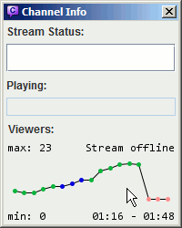

| General usage | Advanced Miscallaneous Guides |

When in a channel, Chatty shows some information about that channel
in the titlebar, e.g.:
[40|59] - GTA:SA Speedruns (Grand Theft Auto: San Andreas)
The first number is the number of people in the chat, the second is the viewercount, followed by the current stream title and game. Anything other than the number of people in the chat is requested from the Twitch API about every two minutes.
There are a few special symbols that are used for users in chat. These are displayed in the userlist and - if usericons are disabled - also in chat.
FrankerFaceZ provides a custom mod icon for some channels. You can disable this in the settings if you want to keep the default one for all channels.
|
The History is a graph that shows the development of the viewers of the currently active channel and also indicates stream status changes (online/offline/title/game) by different colors. Hover over points to display the stream status and viewercount at that time. Right-click for a context-menu. There are two ways to change which time range is being displayed:
The History is recorded while you have the channel open in Chatty as well as for all followed channels, if you have that feature enabled. The shown data usually fits to the available vertical space
(so if the min/max viewercounts were 341/403 then only this
range is shown). If you choose |
 |
Some of the available shortcuts (only work when focus is in the appropriate place):
Chat commands:
/me <message> - Send an action message (* nickname says something) to the channel/to <nick> [time] - Timeout the user with the given nickname for "time" seconds (time is optional)/timeout, /ban, /unban,
/slow, /slowoff,
/subscribers, /subscribersoff,
/clear, /mods
just like in normal Twitch ChatInfo commands:
/connection - Show info about the current connection/dir - Show the directory the settings (and other stuff) are saved in/wdir - Show the current working directory/testNotification - Display a test notificationAdvanced commands (not recommended for use unless you know what you do):
/server <host>[:port] - Connect to a custom server/raw <command> - Send a raw command to the serverEnter the beginning of a nick of a user that is currently online, then
press TAB to auto-complete it. For example entering jo and
pressing TAB may change it to joshimuz. If there is no
matching nick, nothing will happen. If there is more than one matching nick,
you can cycle through them by pressing TAB repeatedly. For example
jo might cycle between john, jolzi
and joshimuz.
When you send a message, it is automatically saved into a input history, which you can access (while having the cursor in the input box) by pressing the Up-Arrow-key, which will replace the current contents of the input box with the previously send message. You can go further back and forth again using Up-Arrow and Down-Arrow.
Pressing Down-Arrow after entering or changing a message, removes it and stores it in the history, so you can go back to it and send it later. Pressing Up-Arrow after entering or changing a message will replace it with the previous history entry without saving it.
This only applies when you don't have the Chat Client Version 3
option in the Advanced settings enabled. More Information..
It is possible to join more than one channel with Chatty, however it does have some disadvantages. Several messages from the Chat-Server don't have a channel associated with them (Bans/Timeouts, Specialusers), so while being joined to more than one channel on a single connection, they can't be reliably associated with a channel.
Joining more than one channel means:
Chatty can show Tray Notifications when the status of a stream changes.
There is also a Live Streams window (Channels - Live Channels)
that shows the currently live streams. Both these features always include channels you have
joined and - if enabled - channels you have followed. Streams that are
no longer online, or whose channels you have left and you don't follow,
are added to a list that you can open in the Live Streams window context
menu (Removed streams..).
Chatty can request a list of streams you follow on a regular basis, so you have both an overview of currently live streams as well as be informed about status changes (offline -> online, title change, game change). This is always available for streams whose channels you have joined in chat, but with this feature enabled, this works for all streams you follow even without joining their channel.
This feature requires Read user info access, so Chatty can
request your followed streams. Read the section about login
to learn more about login data and access.
You can enable/disable this feature in the Settings under Notifications.
In the Admin Dialog you can change the title/game of your channel and
run commercials, if you have allowed the necessary access when getting your
login data. You need Editor access for changing game/title and
Commercial access for running commercials. See allow more access.
The Admin Dialog is always opened for the currently selected channel, unless there is no channel open (which is the case just after you started Chatty), in which case it will always be opened for your own channel, which is derived from your configured account name.
The Status-Tab lets you view and change the title and game of your channel.
The information is loaded when you open the dialog and when you press the
reload-Button. If others may have changed the info in the meantime,
you may want to reload before trying to change it.
When you select a game, another dialog will open where you should enter
part of the name of the game in the search field and hit Enter
or click the Search-Button to find the correct name, which
you can then select. You can also just use the name you entered yourself,
but you should usually use the search to make sure your stream appears in
the correct category on Twitch.
There are also status presets, which allow you to add a combination of
title and game, so you can select it later. By pressing Fav
on the Status-Tab, you can add the current status to the favorites.
The status is also automatically added to the history every time you
press the Update button.
Press the Presets button to open a table with the favorites
and status history. You can filter the table by only showing entries for
the game currently have selected or only showing favorites.
History entries (the ones that are not favorites) are automatically removed after some time, you can change when they are removed and whether they should be added in the first place in the settings.
The Last Activity columns shows when this status was last
set using the Update button (or when it was added to the
favorites for the first time). The Usage column shows how
often it was set using the Update button.
If you are partnered with Twitch, you can run commercials on your channel here (even if you are not partnered it may run a commercial). Click on the appropriate button to try to run a commercial of the given length.
If you
select Use delay, then the commercial will be run after the
specified time. Examples for times: 30 (30 seconds), 5m
(5 minutes), 120s (2 minutes). You can change the commercial
length during the wait by clicking another button. Click the currently
selected length button to cancel the scheduled commercial. Scheduled
commercials are no completely exact, they may be run a few seconds too late.
The login data consists of a username (or account name) and most importantly an access token, which is sort of a revokable password that can also have different types of access associated with it, some of them being:
Once requested from Twitch, the login data is stored locally on your computer along with the other settings of Chatty. Since Twitch gives out the access token per application, any access token for the same account requested with Chatty will be invalidated when you request a new access token.
If getting login data fails, read this guide.
To allow Chatty more access than it already has (e.g. if you haven't selected
editor access before, but you want it now),
you need to request a new access token.
Just go to Main - Connect - Configure login (you have to be disconnected), delete the login
and request it again with the necessary access.
To allow Chatty less access than it already has (e.g. you don't want it to have editor access anymore) you need to first revoke access completely in your Twitch Account Settings, then authorize access again. What will not work is just requesting a new token without selecting the now unwanted access. Twitch will always respond with a token that has at least as much access as the previous one.
If enabled, the history automatically saves channels you join and when you last joined them. By default channels expire from the history after 30 days of not joining them (can be changed).
You can also add channels from the history or any you enter manually to the favorites, which will always be kept until you remove them yourself.
The highlight system allows you to add words or phrases that make chat
messages appear in another color and appear in a seperate window, which you can
open under View - Highlights (you can clear the highlights window
in it's context menu).
The color of a user is displayed in the User Info Dialog. Color Names are used where possible, HTML Color Codes are displayed in the Tooltip. Colors with asterisk (*) are default colors (the user hasn't set one or hasn't said anything during this session yet). A color in parentheses means it's the original color, while the other color is the corrected one that is actually displayed.
Chatty attempts to make colors more readable automatically by changing them to increase contrast. This doesn't work very well though, although it should work for extreme cases like white on white or black on black.
You can also specify custom colors for certain users or types of users in the settings. Custom colors are indicated by two asterisks (**) in the User Info Dialog.
Chatty supports the default Twitch Emoticons (Normal/Turbo/Subscriber), which should work the same as in normal Twitch Chat. It however also supports FrankerFaceZ, a custom set of emotes that is normally made available in normal Twitch Chat by use of browser extensions.
You can enable/disable Emoticons in general (displaying the icons instead
of the text) in the settings under Main.
The addressbook allows you to add usernames and assign categories to them, which can then be used in other places such as the Usercolor settings or the Highlight settings.
The addressbook can be edited in several ways:
<Main Menu> - Channels - Addressbook)
where all entries are listed and you can add/edit/remove entries.Addressbook)
where the entry for this user can be directly added/edited/removed. There
you can just select/unselect the categories this user should be in
(although only the categories that are already used in the addressbook
are listed, so if you want to add a completely
new category, you have to add it once by manually editing an entry).In addition to the addressbook dialog and user context menu, there are also some commands to
edit the addressbook. All commands are prefixed with /ab
(e.g. /ab add <name>) or alternatively /users (e.g. /users add <name>):
add <name> - Adds a nameadd <name> <categories> - Adds a name and directly assigns it the given categories, or adds the
categories to the name if it already existsset <name> <categories> - Sets the categories for this name, adding it if necessary, replacing
any present categories for this nameremove <name> - Completely removes the given nameremove <name> <categories> - Removes the given categories from this name, but leaves
the nameget <name> - Shows the categories for this nameinfo - Shows number of entries and used categoriesCategories are given as a comma-seperated list without spaces, e.g. cat1,cat2,cat3.
The following commands edit all entries at once, so they should be used with care:
renameCategory <currentName> <newName> - Renames a category, which means all occurences
of currentName are replaced with newName in all entries. This can also
be used to merge categories, if newName already exists.removeCategory <name> - Removes the category with the given name from all entriesYou can enable the option Ignore joins/parts in the
Advanced Settings to ignore all joins and parts, this
means the userlist and the usercount will only be based on people who
actually wrote something.
The program will not register joins/parts at all. This can be useful in
really big channels (like 10,000+ users) because having this big a userlist
can reduce performance.
It may be better to enable the Chat Client Version 3 setting instead, which makes the chat not even send joins/parts.
This is not to be confused with the option Show joins/parts
which only affects if joins/parts should be shown in the chat window.
There are a few options you can launch Chatty with, that will override settings loaded from the settings file:
There are a couple of commands that allow you to change settings from
the chat inputbox. You should know what you're doing
before using these. /set <setting> <value>
changes a setting, /get <setting> shows the current value
of a setting, /reset <setting> resets the setting to
the default (hard-coded) value, /clearsetting <setting> sets
string settings to an empty string.
Some of the available settings include (this list may be incomplete/incorrect):
font, fontSize, lineSpacingbackgroundColor,
foregroundColor,
infoColor,
compactColor,
inputForegroundColor,
inputBackgroundColor
timeoutButtons (a comma-seperated list of numbers (time in seconds)
defining the timeout-buttons in the UserInfo dialog)timestamp (a String defining the timestamp format, "off" means no timestamp)token (the access token to use for connecting)username (the name to use for connecting)usePassword (whether to use a password for connecting
instead of an access token)twitchnotifyAsInfo (show messages from user "twitchnotify" as
info messages)spamProtection (how many messages are allowed, "message/seconds", e.g. "19/30")abCommands (Which Addressbook commands should be allowed for moderators,
comma-seperated without spaces, any of the ones that can be used with the /ab prefix)abCommandsChannel (Enable Addressbook commands for moderators in the given
channel, reset this setting to default to disable feature again)serverDefault/portDefault, server/port (what server/port to connect to,
first set is the default one that can be changed in the settings dialog and is saved in between
sessions, the second set comes from the commandline parameters and overrides the default ones
when connecting)Settings are loaded from files when Chatty is started and saved into files
once it is closed. By default these files are saved in a subfolder
.chatty of your user directory. You can also use the
-cd commandline parameter to use the current working
directory instead. You can find out which folder is used by entering the
/dir command.
Since Version 0.4 of Chatty, the settings are no longer saved in a single
settings-file, but instead several files:
login: Contains the login data, including the access
token, which should be kept confidential.favoritesAndHistory: Contains channel history and
favorites, as well as game favorites.settings: The main file, which contains all customizations
made to Chatty that should not be confidential or private.Some of the resources that were helpful in the development of this program:
Chatty is using a few libraries/resources made freely available by others:
This application (except for the parts mentioned in the previous paragraph) is released under the MIT License.
Copyright (c) 2014 tduva Permission is hereby granted, free of charge, to any person obtaining a copy of this software and associated documentation files (the "Software"), to deal in the Software without restriction, including without limitation the rights to use, copy, modify, merge, publish, distribute, sublicense, and/or sell copies of the Software, and to permit persons to whom the Software is furnished to do so, subject to the following conditions: The above copyright notice and this permission notice shall be included in all copies or substantial portions of the Software. THE SOFTWARE IS PROVIDED "AS IS", WITHOUT WARRANTY OF ANY KIND, EXPRESS OR IMPLIED, INCLUDING BUT NOT LIMITED TO THE WARRANTIES OF MERCHANTABILITY, FITNESS FOR A PARTICULAR PURPOSE AND NONINFRINGEMENT. IN NO EVENT SHALL THE AUTHORS OR COPYRIGHT HOLDERS BE LIABLE FOR ANY CLAIM, DAMAGES OR OTHER LIABILITY, WHETHER IN AN ACTION OF CONTRACT, TORT OR OTHERWISE, ARISING FROM, OUT OF OR IN CONNECTION WITH THE SOFTWARE OR THE USE OR OTHER DEALINGS IN THE SOFTWARE.